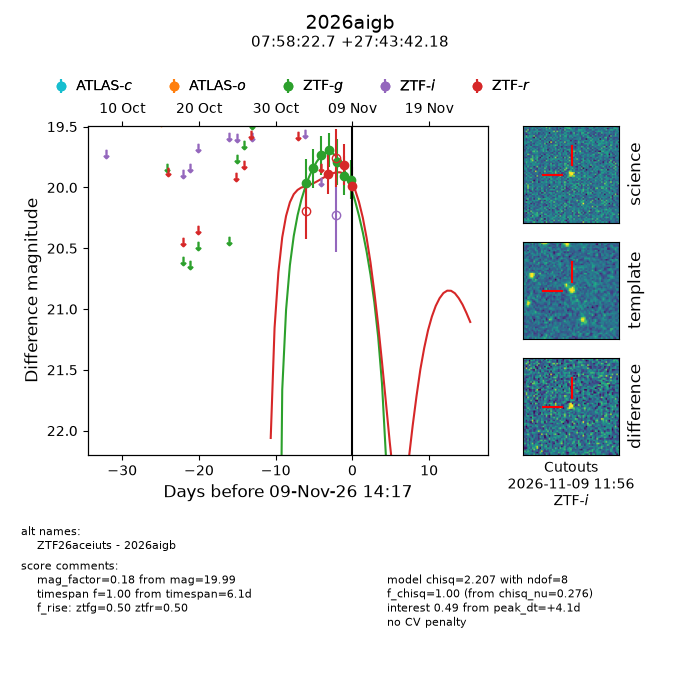
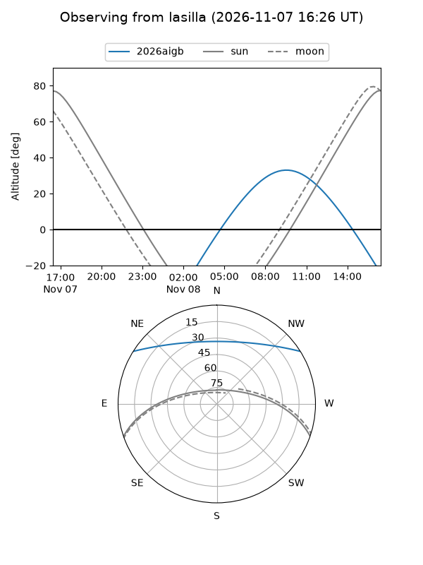
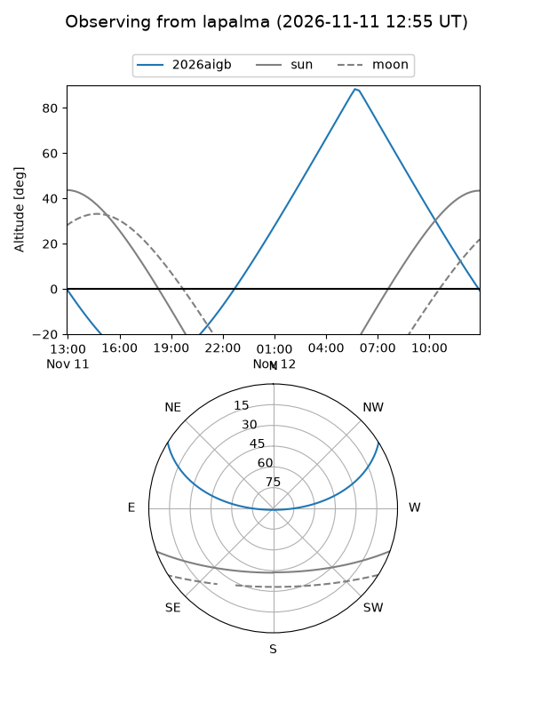
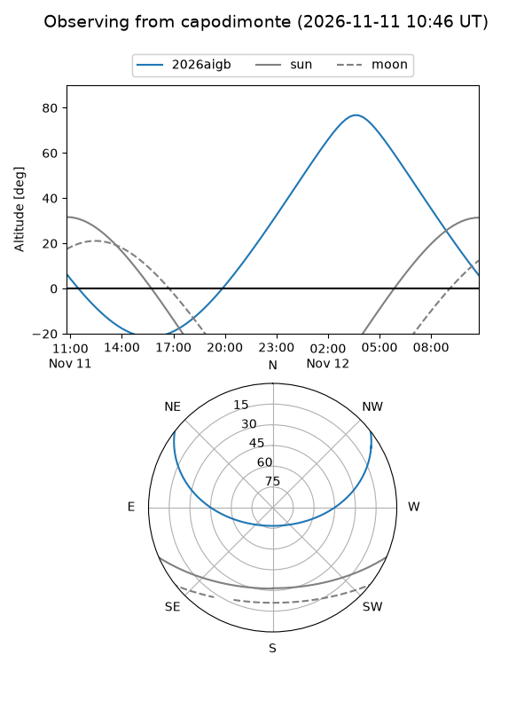
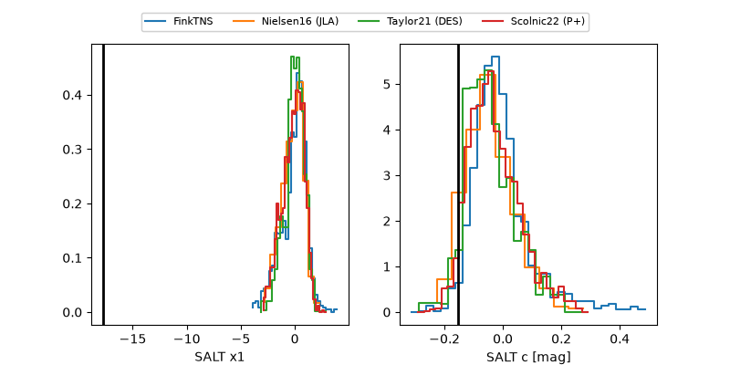

2026aigb
Target 2026aigb at 2026-11-09 14:20
Aliases and brokers:
FINK-ZTF: ztf.fink-portal.org/ZTF26aceiuts
Lasair-ZTF: lasair-ztf.lsst.ac.uk/objects/ZTF26aceiuts
ALeRCE-ZTF: alerce.online/object/ZTF26aceiuts
YSE-PZ: ziggy.ucolick.org/yse/transient_detail/2026aigb
TNS name: wis-tns.org/object/2026aigb
Direct TNS query: direct search
alt names
ZTF26aceiuts (ztf,fink_ztf)
2026aigb (tns,yse)
Coordinates:
equatorial (ra, dec) = 119.5947,+27.72838
equatorial (HMS+DMS) = 07:58:22.73,+27:43:42.18
galactic (l, b) = (193.5705,+26.04027)
Flags:
peak dt: +4.1
Photometry:
last ztfg=19.94, ztfr=19.99
7 ztfg, 3 ztfr detections
Lightcurve

Visibility



Additional plots
